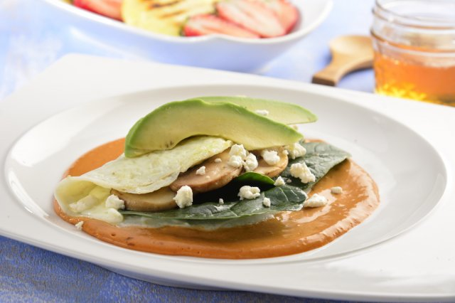

OMELETTE VEGETARIANO CON CLARAS DE HUEVO
Este omelette vegetariano con claras de huevo relleno de espinaca y aguacate frescos, acompañado con champiñones y queso de cabra va a ser el platillo perfecto para un desayuno saludable y súper completo.
Ingredientes
- 10 piezas de clara de huevo batidas
- suficiente de Aceite de Oliva Great Value® Extra Virgen en Aerosol
- 4 piezas de chile ancho sin semillas y desvenado
- 4 piezas de chile ancho sin semillas y desvenado
- 2 cucharadas de piloncillo
- 1 pizca de pimienta
- 1 pizca de Sal
- 1 taza de espinaca baby
- 1 taza de Champiñones Rebanados en Salmuera Great Value® drenados
- 1/4 de taza de Queso de Cabra Extra Especial® fresco de tomates sicilianos
- 1 pieza de aguacate cortado en cubos medianos
- 1/4 de taza de perejil finamente picado, para decorar
Preparacion
-
Calienta a fuego medio una sartén chico el aceite en aerosol, agrega las claras de huevo y cocina formando un omelette. Retira y reserva.
-
En una ollita pequeña agrega el chile ancho con la crema para batir y el piloncillo, sazona a tu gusto. Cocina hasta que se ablande el chile. Licúa la preparación hasta obtener una salsa homogénea. Reserva.
-
Sirve la salsa en forma de espejo en un plato agrega el omelette relleno de espinaca, champiñones, queso de cabra desmoronado y aguacate. Espolvorea con perejil. Disfruta.